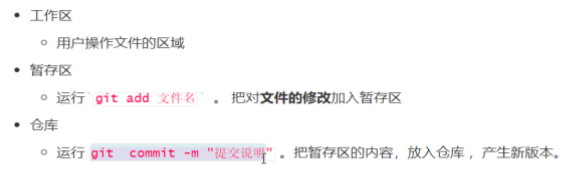

Git介绍
-
版本控制：记录文本内容的变化
-
版本管理软件：分布式：所有节点通过远程仓库来协同工作
* 集中式
Git使用
mkdir 创建目录（文件夹） mkdir 目录1
cd 进入目录 cd 目录1
cd.. 返回上一级目录
ls 查看目录
ls -a 查看目录以及隐藏目录
touch 新建文件 touch 文件1 文件2
rm 删除文件
clear 清空屏幕
cat 查看文件内容
less 查看文件，但是需要按q退出
上下方向键 切换历史命令
tab键 补全命令
创建文件并进入编辑模式
1.vi 文件名（进入要修改的文件 ）
2.i 进入插入编辑模式
3.esc 退出编辑模式
4.:q 退出编辑不保存
:wq 保存并退出
:q! 强制退出不保存
基本Git工作流程
新建仓库/目录
git init //git初始化（initialized 初始化 | repository 仓库）
giti add
git commit -m "代码修改说明"
git log 查看每次提交内容的命令
git log --oneline(在一行显示)
git reset --hard summit 上一条命令里面的commit后面的值复制一下
git status//git状态
untracked//未跟踪的，也就是说没有被git管理
git add 需要被管理的文件，将在工作区的文件放入暂存区（从未跟踪到已跟踪状态，放在暂存区）
git add . 添加除隐藏的git文件夹，剩下的都添加进去
git commit -m "代码修改的备注信息"----提交到git仓库

work tree clean代表的是暂存区空

撤销修改
从工作区还原
放弃指定文件的修改
git checkout -- 想要变回原来内容的文件名
放弃所有文件的修改
git checkout .
放弃暂存区的修改
对单个文件
git reset HEAD yourfilename.ext
git checkout --yourfilename.ext
对所有文件
git reset HEAD
git checkout .

回滚整个版本

建立git库
建立一个新的文件夹 启动git bash
git init//初始化，显示
Initialized empty Git repository in D:/黑马学习资料/9.git/ld/.git/
即在ld文件夹下建立git库成功，可以使用ls -a查看一下文件夹下面所有的文件

ls命令用来列出当前目录下的文件及文件夹
cd命令

掌握方向上下键
方向上下键调历史命令
tab键补全代码
查看git仓库的状态

未跟踪状态

把未跟踪的文件添加到仓库中

git log查看提交记录

提交修改
- 添加到暂存区（git add）
- 提交修改（git commit）
使用git撤销操作，切换想要到达的状态
放弃在工作区的修改
只在工作区（VScode当中修改了内容），想要撤销操作
git checkout index.html(想要撤销的文件名)
放弃在暂存区的修改
第一次提交过后，对工作区的内容进行了修改，并且还进行了add操作，此时想要撤销这个操作使用
git reset HEAD index.html
git checkout index.html

放弃在仓库中的修改
删除文件


分支：

新建分支


git-clone远程仓库